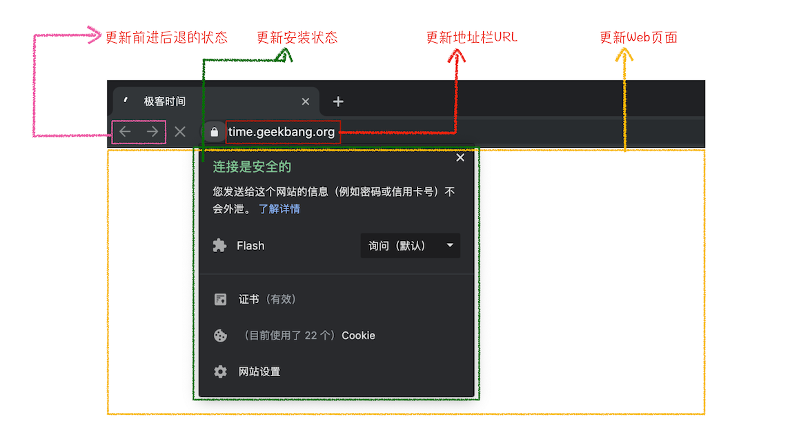

<!DOCTYPE html>


<html lang="zh">


<head>
  <meta charset="utf-8" />
   
  <meta name="keywords" content="hexo blog" />
   
  <meta name="description" content="young blog write my world" />
  
  <meta name="viewport" content="width=device-width, initial-scale=1, maximum-scale=1" />
  <title>
    chrome架构演进 |  young blog write my world
  </title>
  <meta name="generator" content="hexo-theme-ayer">
  
  <link rel="shortcut icon" href="/favicon.ico" />
  
  
<link rel="stylesheet" href="/dist/main.css">

  
<link rel="stylesheet" href="https://cdn.jsdelivr.net/gh/Shen-Yu/cdn/css/remixicon.min.css">

  
<link rel="stylesheet" href="/css/custom.css">

  
  
<script src="https://cdn.jsdelivr.net/npm/pace-js@1.0.2/pace.min.js"></script>

  
  

  

</head>

</html>

<body>
  <div id="app">
    
      
    <main class="content on">
      <section class="outer">
  <article
  id="post-chrome架构演进"
  class="article article-type-post"
  itemscope
  itemprop="blogPost"
  data-scroll-reveal
>
  <div class="article-inner">
    
    <header class="article-header">
       
<h1 class="article-title sea-center" style="border-left:0" itemprop="name">
  chrome架构演进
</h1>
 

    </header>
     
    <div class="article-meta">
      <a href="/2020/09/21/chrome%E6%9E%B6%E6%9E%84%E6%BC%94%E8%BF%9B/" class="article-date">
  <time datetime="2020-09-21T13:51:08.000Z" itemprop="datePublished">2020-09-21</time>
</a> 
  <div class="article-category">
    <a class="article-category-link" href="/categories/%E6%B5%8F%E8%A7%88%E5%99%A8/">浏览器</a>
  </div>
  
<div class="word_count">
    <span class="post-time">
        <span class="post-meta-item-icon">
            <i class="ri-quill-pen-line"></i>
            <span class="post-meta-item-text"> Word count:</span>
            <span class="post-count">3.4k</span>
        </span>
    </span>

    <span class="post-time">
        &nbsp; | &nbsp;
        <span class="post-meta-item-icon">
            <i class="ri-book-open-line"></i>
            <span class="post-meta-item-text"> Reading time≈</span>
            <span class="post-count">11 min</span>
        </span>
    </span>
</div>
 
    </div>
      
    <div class="tocbot"></div>


  
    <div class="article-entry" itemprop="articleBody">
       
  <h1 id="进程和线程"><a href="#进程和线程" class="headerlink" title="进程和线程"></a>进程和线程</h1><p></p>
<h2 id="进程"><a href="#进程" class="headerlink" title="进程"></a>进程</h2><ul>
<li><p>进程：进程是资源（cpu，内存等）分配的基本单位，它是程序执行时的一个实例</p>
</li>
<li><p>程序运行时，系统会创建一个进程，并为他分配资源，然后把改进程放人进程就绪队列，线程调度器选择它的时候就会为它分配cpu时间，程序开始真正运行</p>
</li>
</ul>
<h2 id="线程"><a href="#线程" class="headerlink" title="线程"></a>线程</h2><ul>
<li><p>线程：线程是程序执行时的基本单元，它是进程的一个执行流，是cpu调度和分派的基本单位。</p>
</li>
<li><p>一个进程可以由很多线程组成，线程间共享进程的所有资源，每个线程有自己的堆栈和局部变量线程由cpu独立调度执行，在多cpu的环境下允许多个线程同时运行</p>
</li>
</ul>
<h2 id="关系"><a href="#关系" class="headerlink" title="关系"></a>关系</h2><p></p>
<ul>
<li>进程中任意一个线程出现错误都会导致进程的崩溃</li>
<li>进程之间的线程可以对进程公共的内存区域进行读写操作</li>
<li>当一个进程关闭退出后，操作系统会回收为该进程开辟的内存区域</li>
<li>进程之间的内存区域是相互隔离的，进程A的崩溃是不会影响进程B的运行，不同进程一般是通过IPC进行通信，需要操作系统的支持</li>
</ul>
<h1 id="浏览器架构模型"><a href="#浏览器架构模型" class="headerlink" title="浏览器架构模型"></a>浏览器架构模型</h1><h2 id="单进程模型"><a href="#单进程模型" class="headerlink" title="单进程模型"></a>单进程模型</h2><p></p>
<ul>
<li><p>早在2007年之前，浏览器架构是单进程多线程模型，浏览器的网络，渲染，插件等都是运行在同一个进程中</p>
</li>
<li><p>一般有三个以上线程配合工作，比如网络线程，页面线程，其他线程等，页面线程做的事情包括：页面渲染，页面展示，JavaScript环境，插件等，网络线程主要就是处理网络相关的工作。</p>
</li>
<li><p>这也直接导致了早期的浏览器不稳定，不流畅，不安全。</p>
</li>
</ul>
<h3 id="不稳定"><a href="#不稳定" class="headerlink" title="不稳定"></a>不稳定</h3><p>早期浏览器需要借助插件来实现诸如Web视频，Web游戏等各种强大功能。但是插件是最容易出现问题的模块，它的崩溃会导致跟个浏览器的崩溃。</p>
<h3 id="不流畅"><a href="#不流畅" class="headerlink" title="不流畅"></a>不流畅</h3><figure class="highlight plain"><table><tr><td class="gutter"><pre><span class="line">1</span><br><span class="line">2</span><br><span class="line">3</span><br><span class="line">4</span><br><span class="line">5</span><br><span class="line">6</span><br></pre></td><td class="code"><pre><span class="line">function run()&#123;</span><br><span class="line">	while(true)&#123;</span><br><span class="line">		run()</span><br><span class="line">	&#125;</span><br><span class="line">&#125;</span><br><span class="line">run()</span><br></pre></td></tr></table></figure>

<ul>
<li><p>单进程浏览器意味着某个时刻只能执行单个模块的任务。比如页面线程中，如果我们的js代码进入到了一个如上图所示的一个死循环中，此时它会独占该线程，其他任务就无法执行，导致页面卡顿</p>
</li>
<li><p>如果运行了某个复杂的页面又关闭了，此时内存可能导致泄漏，这些无法回收的内存会让你本来捉襟见肘的内存更加雪上加霜，随着使用时间越长，内存占用越高，系统就越不流畅。</p>
</li>
</ul>
<h3 id="不安全"><a href="#不安全" class="headerlink" title="不安全"></a>不安全</h3><ul>
<li>以插件为例，插件一般是C\C++等代码编写，通过插件可以获得操作系统的任意资源，当你在运行一个插件的时候，意味着该插件可以操纵你的电脑。如果是一个恶意的插件，那么浏览器上保存的账号密码就有泄漏的风险，从而引发安全性的问题。</li>
<li>运行的js脚本文件，同样可以通过浏览器的漏洞来获取系统权限，也是完全会造成安全上的风险。</li>
</ul>
<h3 id="总结"><a href="#总结" class="headerlink" title="总结"></a>总结</h3><ul>
<li>单线程模型导致的不稳定，不流畅和不安全是显而易见的。比如早点年，最大的直观感受就是，某个tab页面发生了崩溃，其他开始还是好好的页面都会接着崩溃，就是该原理导致的。</li>
</ul>
<h2 id="多进程模型"><a href="#多进程模型" class="headerlink" title="多进程模型"></a>多进程模型</h2><h3 id="解决问题"><a href="#解决问题" class="headerlink" title="解决问题"></a>解决问题</h3><p><strong>我们先看看如何解决不稳定的问题</strong></p>
<ul>
<li>由于进程是相互隔离的，所以当一个页面或者插件崩溃时，影响到的仅仅是当前的页面进程或者插件进程，并不会影响到浏览器和其他页面，这就完美地解决了页面或者插件的崩溃会导致整个浏览器崩溃，也就是不稳定的问题。</li>
</ul>
<p><strong>接下来再来看看不流畅的问题是如何解决的</strong></p>
<ul>
<li><p>同样，JavaScript也是运行在渲染进程中的，所以即使JavaScript阻塞了渲染进程，影响到的也只是当前的渲染页面，而并不会影响浏览器和其他页面，因为其他页面的脚本是运行在它们自己的渲染进程中的。所以当我们再在Chrome中运行上面那个死循环的脚本时，没有响应的仅仅是当前的页面。</p>
</li>
<li><p>对于内存泄漏的解决方法那就更简单了，因为当关闭一个页面时，整个渲染进程也会被关闭，之后该进程所占用的内存都会被系统回收，这样就轻松解决了浏览器页面的内存泄漏问题。</p>
</li>
</ul>
<p><strong>最后我们再来看看上面的两个安全问题是怎么解决的</strong></p>
<ul>
<li>采用多进程架构的额外好处是可以使用安全沙箱，你可以把沙箱看成是操作系统给进程上了一把锁，沙箱里面的程序可以运行，但是不能在你的硬盘上写入任何数据，也不能在敏感位置读取任何数据，例如你的文档和桌面。Chrome把插件进程和渲染进程锁在沙箱里面，这样即使在渲染进程或者插件进程里面执行了恶意程序，恶意程序也无法突破沙箱去获取系统权限。</li>
</ul>
<h3 id="进程解析"><a href="#进程解析" class="headerlink" title="进程解析"></a>进程解析</h3><p></p>
<p>如上图所示，可以看到Chrome浏览器是由一个浏览器主进程，多个渲染进程，一个网络进程，多个插件进程和一个GPU进程</p>
<ul>
<li><p>浏览器主进程：主要来负责页面显示；用户的页面交互，比如鼠标点击；管理其他子进程，数据存储等</p>
</li>
<li><p>渲染进程：核心任务是将HTML，CSS和JavaScript转换为用户可交互的网页，排版引擎Blink和V8引擎都是运行在该线程中。默认情况下，每个tab都出新创建出一个新的渲染进程，并且都是运行在沙盒环境中。</p>
</li>
<li><p>网络进程：只有一个，是负责页面的网络资源的加载。</p>
</li>
<li><p>GPU进程：以前的GPU是为了实现3D CSS效果的，后来浏览器的UI绘制都采用了该绘制模式。</p>
</li>
<li><p>插件进程：主要是负责插件的运行，和渲染进程一样，每个tab的插件都会自己独立的插件进程，并运行在沙盒环境中。即使一个插件进程的崩溃也不会导致其他页面造成影响。</p>
</li>
</ul>
<p>多进程模型，优势非常明显，直接解决了稳定性，流畅性和安全性的问题。但是也有一点缺点：</p>
<ul>
<li>更高的资源占用：因为进程是系统资源的基本单元，多进程意味着浏览器需要消耗更多的内存资源</li>
<li>更复杂的架构体系：浏览器各模块之间耦合性高、扩展性差等问题，会导致现在的架构已经很难适应新的需求了。</li>
</ul>
<h2 id="面向未来的架构"><a href="#面向未来的架构" class="headerlink" title="面向未来的架构"></a>面向未来的架构</h2><p>为了解决这些问题，在2016年，Chrome官方团队使用“面向服务的架构”（Services Oriented Architecture，简称SOA）的思想设计了新的Chrome架构。也就是说 Chrome 整体架构会朝向现代操作系统所采用的“面向服务的架构” 方向发展，原来的各种模块会被重构成独立的服务（Service），每个服务（Service）都可以在独立的进程中运行，访问服务（Service）必须使用定义好的接口，通过IPC来通信，从而构建一个更内聚、松耦合、易于维护和扩展的系统，更好实现 Chrome 简单、稳定、高速、安全的目标。如果你对面向服务的架构感兴趣，你可以去网上搜索下资料，这里就不过多介绍了。</p>
<p>Chrome最终要把UI、数据库、文件、设备、网络等模块重构为基础服务，类似操作系统底层服务，下面是Chrome“面向服务的架构”的进程模型图</p>
<p></p>
<p>目前Chrome正处在老的架构向服务化架构过渡阶段，这将是一个漫长的迭代过程。</p>
<p>Chrome正在逐步构建Chrome基础服务（Chrome Foundation Service），如果你认为Chrome是“便携式操作系统”，那么Chrome基础服务便可以被视为该操作系统的“基础”系统服务层。</p>
<p>同时Chrome还提供灵活的弹性架构，在强大性能设备上会以多进程的方式运行基础服务，但是如果在资源受限的设备上（如下图），Chrome会将很多服务整合到一个进程中，从而节省内存占用。</p>
<p></p>
<h1 id="多进程架构下，从输入url到页面展示，发生了什么"><a href="#多进程架构下，从输入url到页面展示，发生了什么" class="headerlink" title="多进程架构下，从输入url到页面展示，发生了什么"></a>多进程架构下，从输入url到页面展示，发生了什么</h1><p></p>
<p>上图实际上可以直观反应出，“从输入url到页面展示”的全过程。如果你对刚才多进程架构有了一定的理解，应该很容易想到下面的步骤</p>
<ul>
<li>首先，用户在浏览器进程里输入请求信息</li>
<li>网络进程发起URL请求</li>
<li>服务器响应请求后返回数据，浏览器进程开始准备渲染进程</li>
<li>渲染进程准备好后，和网络进程进程建立通道，网络进程让渲染进程提供请求到的数据，称为文档提交阶段</li>
<li>渲染进程接收到文档信息后，开始数据解析和子资源的加载，完成页面的渲染。</li>
</ul>
<p>这其中，用户发出URL请求到页面开始解析的这个过程，就叫做导航。</p>
<h2 id="从输入URL到页面展示"><a href="#从输入URL到页面展示" class="headerlink" title="从输入URL到页面展示"></a>从输入URL到页面展示</h2><h3 id="1-用户输入"><a href="#1-用户输入" class="headerlink" title="1.用户输入"></a>1.用户输入</h3><p>当用户在地址栏输入关键字时，地址栏会判断关键字时搜索的内容还是跳转的URL地址</p>
<ul>
<li>如果是搜索内容，地址栏会使用默认的引擎，并把关键词合并成可搜索的URL进行搜索</li>
<li>如果是符合规范的URL地址，地址栏会默认添加协议拼成符合调整的URL地址</li>
<li>输入后，点击回车，此时地址栏会是加载的loading，页面也不会被立即替换，因为需要等待页面提交文档阶段，新的页面才会真正渲染加载出来</li>
</ul>
<h3 id="2-URL请求过程"><a href="#2-URL请求过程" class="headerlink" title="2.URL请求过程"></a>2.URL请求过程</h3><ul>
<li>浏览器进程通过IPC把URL发送给网络进程，网络进程开始进行网络请求<ul>
<li>网络进程会查本地是否有缓存，如果有，直接返回资源给浏览器进程，如果没有，则发起网络请求流程。</li>
<li>开始DNS解析，获取域名的IP地址，然后构建TLS连接（https）</li>
<li>构建IP和服务器之间的连接。连接建立后，浏览器会构建请求行，请求头等信息，并把和该域名相关的Cookie添加到请求头中，开始发起网络请求</li>
</ul>
</li>
<li>获取服务器响应后，如果返回code为301，302等，表示服务器希望URL重新请求到Location地址，也就是重定向</li>
<li>如果返回code为200，表示数据正常返回</li>
<li>返回字段Content-type表示返回值内容，一般有网页内容，json内容，文件下载内容等</li>
</ul>
<h3 id="3-准备渲染进程"><a href="#3-准备渲染进程" class="headerlink" title="3.准备渲染进程"></a>3.准备渲染进程</h3><ul>
<li>默认情况下，浏览器会为每个tab页面页面分配一个渲染进程，也就是说，每打开一个新的页面，就会创建一个新的渲染进程。但是如果打开的页面的域名在已经在别的页面中打开过了，那么此时是不会重新创建新的渲染进程，而是直接复用同域名下的渲染进程，这种机制称为：process-per-site-instance。</li>
<li>总结来说，打开一个新页面采用的渲染进程策略就是：<ul>
<li>通常情况下，打开新的页面都会使用单独的渲染进程；</li>
<li>如果从A页面打开B页面，且A和B都属于同一站点的话，那么B页面复用A页面的渲染进程；如果是其他情况，浏览器进程则会为B创建一个新的渲染进程。</li>
</ul>
</li>
<li>渲染进程准备好后，还不会立即进入文档解析阶段，因为此时的文档数据还在网络进程中，并没有提交给渲染进程，所以下一步就进入了文档提交阶段。</li>
</ul>
<h3 id="4-文档提交"><a href="#4-文档提交" class="headerlink" title="4.文档提交"></a>4.文档提交</h3><p>首先明确一点，这里的“文档”指的是URL请求返回的数据</p>
<ul>
<li>“提交文档”是浏览器线程发出来的，渲染线程收到消息后，和网络现场建立传输通道</li>
<li>等文档数据传输完成后，渲染线程会通知浏览器线程确认接收完成</li>
<li>浏览器线程在“确认接收”后，会更新浏览器的界面状态，包括了安全状态，地址栏的URL，前进后退的历史状态，更新页面等</li>
<li>如下图示，这也就说明了输入一个url后，为何状态栏没有立即更新过来</li>
</ul>
<p></p>
<h3 id="5-渲染阶段"><a href="#5-渲染阶段" class="headerlink" title="5.渲染阶段"></a>5.渲染阶段</h3><p>一旦文件被渲染进程接收，便开始了页面解析和子资源的加载。一旦这个阶段的完成，状态栏的loading图标就会停止，变成网站配置的logo</p>
 
      <!-- reward -->
      
      <div id="reword-out">
        <div id="reward-btn">
          Donate
        </div>
      </div>
      
    </div>
    

    <!-- copyright -->
    
    <div class="declare">
      <ul class="post-copyright">
        <li>
          <i class="ri-copyright-line"></i>
          <strong>Copyright： </strong>
          
          Copyright is owned by the author. For commercial reprints, please contact the author for authorization. For non-commercial reprints, please indicate the source.
          
        </li>
      </ul>
    </div>
    
    <footer class="article-footer">
       
<div class="share-btn">
      <span class="share-sns share-outer">
        <i class="ri-share-forward-line"></i>
        分享
      </span>
      <div class="share-wrap">
        <i class="arrow"></i>
        <div class="share-icons">
          
          <a class="weibo share-sns" href="javascript:;" data-type="weibo">
            <i class="ri-weibo-fill"></i>
          </a>
          <a class="weixin share-sns wxFab" href="javascript:;" data-type="weixin">
            <i class="ri-wechat-fill"></i>
          </a>
          <a class="qq share-sns" href="javascript:;" data-type="qq">
            <i class="ri-qq-fill"></i>
          </a>
          <a class="douban share-sns" href="javascript:;" data-type="douban">
            <i class="ri-douban-line"></i>
          </a>
          <!-- <a class="qzone share-sns" href="javascript:;" data-type="qzone">
            <i class="icon icon-qzone"></i>
          </a> -->
          
          <a class="facebook share-sns" href="javascript:;" data-type="facebook">
            <i class="ri-facebook-circle-fill"></i>
          </a>
          <a class="twitter share-sns" href="javascript:;" data-type="twitter">
            <i class="ri-twitter-fill"></i>
          </a>
          <a class="google share-sns" href="javascript:;" data-type="google">
            <i class="ri-google-fill"></i>
          </a>
        </div>
      </div>
</div>

<div class="wx-share-modal">
    <a class="modal-close" href="javascript:;"><i class="ri-close-circle-line"></i></a>
    <p>扫一扫，分享到微信</p>
    <div class="wx-qrcode">
      
    </div>
</div>

<div id="share-mask"></div>  
  <ul class="article-tag-list" itemprop="keywords"><li class="article-tag-list-item"><a class="article-tag-list-link" href="/tags/%E6%9E%B6%E6%9E%84/" rel="tag">架构</a></li><li class="article-tag-list-item"><a class="article-tag-list-link" href="/tags/%E6%B5%8F%E8%A7%88%E5%99%A8/" rel="tag">浏览器</a></li></ul>

    </footer>
  </div>

   
  <nav class="article-nav">
    
      <a href="/2020/09/23/%E6%B5%8F%E8%A7%88%E5%99%A8%E6%B8%B2%E6%9F%93%E8%BF%9B%E7%A8%8B%E5%88%86%E6%9E%90/" class="article-nav-link">
        <strong class="article-nav-caption">上一篇</strong>
        <div class="article-nav-title">
          
            浏览器渲染进程分析
          
        </div>
      </a>
    
    
      <a href="/2020/09/20/js%E7%9A%84EventLoop/" class="article-nav-link">
        <strong class="article-nav-caption">下一篇</strong>
        <div class="article-nav-title">js的EventLoop</div>
      </a>
    
  </nav>

   
<!-- valine评论 -->
<div id="vcomments-box">
  <div id="vcomments"></div>
</div>
<script src="//cdn1.lncld.net/static/js/3.0.4/av-min.js"></script>
<script src="https://cdn.jsdelivr.net/npm/valine@1.4.14/dist/Valine.min.js"></script>
<script>
  new Valine({
    el: "#vcomments",
    app_id: "",
    app_key: "",
    path: window.location.pathname,
    avatar: "monsterid",
    placeholder: "给我的文章加点评论吧~",
    recordIP: true,
  });
  const infoEle = document.querySelector("#vcomments .info");
  if (infoEle && infoEle.childNodes && infoEle.childNodes.length > 0) {
    infoEle.childNodes.forEach(function (item) {
      item.parentNode.removeChild(item);
    });
  }
</script>
<style>
  #vcomments-box {
    padding: 5px 30px;
  }

  @media screen and (max-width: 800px) {
    #vcomments-box {
      padding: 5px 0px;
    }
  }

  #vcomments-box #vcomments {
    background-color: #fff;
  }

  .v .vlist .vcard .vh {
    padding-right: 20px;
  }

  .v .vlist .vcard {
    padding-left: 10px;
  }
</style>

 
     
</article>

</section>
      <footer class="footer">
  <div class="outer">
    <ul>
      <li>
        Copyrights &copy;
        2015-2020
        <i class="ri-heart-fill heart_icon"></i> YOUNG
      </li>
    </ul>
    <ul>
      <li>
        
        
        
        Powered by <a href="https://hexo.io" target="_blank">Hexo</a>
        <span class="division">|</span>
        Theme - <a href="https://github.com/Shen-Yu/hexo-theme-ayer" target="_blank">Ayer</a>
        
      </li>
    </ul>
    <ul>
      <li>
        
        
        <span>
  <span><i class="ri-user-3-fill"></i>Visitors:<span id="busuanzi_value_site_uv"></span></s>
  <span class="division">|</span>
  <span><i class="ri-eye-fill"></i>Views:<span id="busuanzi_value_page_pv"></span></span>
</span>
        
      </li>
    </ul>
    <ul>
      
    </ul>
    <ul>
      
    </ul>
    <ul>
      <li>
        <!-- cnzz统计 -->
        
        <script type="text/javascript" src=''></script>
        
      </li>
    </ul>
  </div>
</footer>
      <div class="float_btns">
        <div class="totop" id="totop">
  <i class="ri-arrow-up-line"></i>
</div>

<div class="todark" id="todark">
  <i class="ri-moon-line"></i>
</div>

      </div>
    </main>
    <aside class="sidebar on">
      <button class="navbar-toggle"></button>
<nav class="navbar">
  
  <div class="logo">
    <a href="/"></a>
  </div>
  
  <ul class="nav nav-main">
    
    <li class="nav-item">
      <a class="nav-item-link" href="/">主页</a>
    </li>
    
    <li class="nav-item">
      <a class="nav-item-link" href="/archives">归档</a>
    </li>
    
    <li class="nav-item">
      <a class="nav-item-link" href="/categories">分类</a>
    </li>
    
    <li class="nav-item">
      <a class="nav-item-link" href="/tags">标签</a>
    </li>
    
    <li class="nav-item">
      <a class="nav-item-link" href="/tags/%E6%97%85%E8%A1%8C/">旅行</a>
    </li>
    
    <li class="nav-item">
      <a class="nav-item-link" target="_blank" rel="noopener" href="http://shenyu-vip.lofter.com">摄影</a>
    </li>
    
    <li class="nav-item">
      <a class="nav-item-link" href="/friends">友链</a>
    </li>
    
    <li class="nav-item">
      <a class="nav-item-link" href="/2019/about">关于我</a>
    </li>
    
  </ul>
</nav>
<nav class="navbar navbar-bottom">
  <ul class="nav">
    <li class="nav-item">
      
      <a class="nav-item-link nav-item-search"  title="Search">
        <i class="ri-search-line"></i>
      </a>
      
      
      <a class="nav-item-link" target="_blank" href="/atom.xml" title="RSS Feed">
        <i class="ri-rss-line"></i>
      </a>
      
    </li>
  </ul>
</nav>
<div class="search-form-wrap">
  <div class="local-search local-search-plugin">
  <input type="search" id="local-search-input" class="local-search-input" placeholder="Search...">
  <div id="local-search-result" class="local-search-result"></div>
</div>
</div>
    </aside>
    <script>
      if (window.matchMedia("(max-width: 768px)").matches) {
        document.querySelector('.content').classList.remove('on');
        document.querySelector('.sidebar').classList.remove('on');
      }
    </script>
    <div id="mask"></div>

<!-- #reward -->
<div id="reward">
  <span class="close"><i class="ri-close-line"></i></span>
  <p class="reward-p"><i class="ri-cup-line"></i>请我喝杯咖啡吧~</p>
  <div class="reward-box">
    
    
  </div>
</div>
    
<script src="/js/jquery-2.0.3.min.js"></script>


<script src="/js/lazyload.min.js"></script>

<!-- Tocbot -->


<script src="/js/tocbot.min.js"></script>

<script>
  tocbot.init({
    tocSelector: '.tocbot',
    contentSelector: '.article-entry',
    headingSelector: 'h1, h2, h3, h4, h5, h6',
    hasInnerContainers: true,
    scrollSmooth: true,
    scrollContainer: 'main',
    positionFixedSelector: '.tocbot',
    positionFixedClass: 'is-position-fixed',
    fixedSidebarOffset: 'auto'
  });
</script>

<script src="https://cdn.jsdelivr.net/npm/jquery-modal@0.9.2/jquery.modal.min.js"></script>
<link rel="stylesheet" href="https://cdn.jsdelivr.net/npm/jquery-modal@0.9.2/jquery.modal.min.css">
<script src="https://cdn.jsdelivr.net/npm/justifiedGallery@3.7.0/dist/js/jquery.justifiedGallery.min.js"></script>

<script src="/dist/main.js"></script>

<!-- ImageViewer -->

<!-- Root element of PhotoSwipe. Must have class pswp. -->
<div class="pswp" tabindex="-1" role="dialog" aria-hidden="true">

    <!-- Background of PhotoSwipe. 
         It's a separate element as animating opacity is faster than rgba(). -->
    <div class="pswp__bg"></div>

    <!-- Slides wrapper with overflow:hidden. -->
    <div class="pswp__scroll-wrap">

        <!-- Container that holds slides. 
            PhotoSwipe keeps only 3 of them in the DOM to save memory.
            Don't modify these 3 pswp__item elements, data is added later on. -->
        <div class="pswp__container">
            <div class="pswp__item"></div>
            <div class="pswp__item"></div>
            <div class="pswp__item"></div>
        </div>

        <!-- Default (PhotoSwipeUI_Default) interface on top of sliding area. Can be changed. -->
        <div class="pswp__ui pswp__ui--hidden">

            <div class="pswp__top-bar">

                <!--  Controls are self-explanatory. Order can be changed. -->

                <div class="pswp__counter"></div>

                <button class="pswp__button pswp__button--close" title="Close (Esc)"></button>

                <button class="pswp__button pswp__button--share" style="display:none" title="Share"></button>

                <button class="pswp__button pswp__button--fs" title="Toggle fullscreen"></button>

                <button class="pswp__button pswp__button--zoom" title="Zoom in/out"></button>

                <!-- Preloader demo http://codepen.io/dimsemenov/pen/yyBWoR -->
                <!-- element will get class pswp__preloader--active when preloader is running -->
                <div class="pswp__preloader">
                    <div class="pswp__preloader__icn">
                        <div class="pswp__preloader__cut">
                            <div class="pswp__preloader__donut"></div>
                        </div>
                    </div>
                </div>
            </div>

            <div class="pswp__share-modal pswp__share-modal--hidden pswp__single-tap">
                <div class="pswp__share-tooltip"></div>
            </div>

            <button class="pswp__button pswp__button--arrow--left" title="Previous (arrow left)">
            </button>

            <button class="pswp__button pswp__button--arrow--right" title="Next (arrow right)">
            </button>

            <div class="pswp__caption">
                <div class="pswp__caption__center"></div>
            </div>

        </div>

    </div>

</div>

<link rel="stylesheet" href="https://cdn.jsdelivr.net/npm/photoswipe@4.1.3/dist/photoswipe.min.css">
<link rel="stylesheet" href="https://cdn.jsdelivr.net/npm/photoswipe@4.1.3/dist/default-skin/default-skin.min.css">
<script src="https://cdn.jsdelivr.net/npm/photoswipe@4.1.3/dist/photoswipe.min.js"></script>
<script src="https://cdn.jsdelivr.net/npm/photoswipe@4.1.3/dist/photoswipe-ui-default.min.js"></script>

<script>
    function viewer_init() {
        let pswpElement = document.querySelectorAll('.pswp')[0];
        let $imgArr = document.querySelectorAll(('.article-entry img:not(.reward-img)'))

        $imgArr.forEach(($em, i) => {
            $em.onclick = () => {
                // slider展开状态
                // todo: 这样不好，后面改成状态
                if (document.querySelector('.left-col.show')) return
                let items = []
                $imgArr.forEach(($em2, i2) => {
                    let img = $em2.getAttribute('data-idx', i2)
                    let src = $em2.getAttribute('data-target') || $em2.getAttribute('src')
                    let title = $em2.getAttribute('alt')
                    // 获得原图尺寸
                    const image = new Image()
                    image.src = src
                    items.push({
                        src: src,
                        w: image.width || $em2.width,
                        h: image.height || $em2.height,
                        title: title
                    })
                })
                var gallery = new PhotoSwipe(pswpElement, PhotoSwipeUI_Default, items, {
                    index: parseInt(i)
                });
                gallery.init()
            }
        })
    }
    viewer_init()
</script>

<!-- MathJax -->

<!-- Katex -->

<!-- busuanzi  -->


<script src="/js/busuanzi-2.3.pure.min.js"></script>


<!-- ClickLove -->

<!-- ClickBoom1 -->

<!-- ClickBoom2 -->

<!-- CodeCopy -->


<link rel="stylesheet" href="/css/clipboard.css">

<script src="https://cdn.jsdelivr.net/npm/clipboard@2/dist/clipboard.min.js"></script>
<script>
  function wait(callback, seconds) {
    var timelag = null;
    timelag = window.setTimeout(callback, seconds);
  }
  !function (e, t, a) {
    var initCopyCode = function(){
      var copyHtml = '';
      copyHtml += '<button class="btn-copy" data-clipboard-snippet="">';
      copyHtml += '<i class="ri-file-copy-2-line"></i><span>COPY</span>';
      copyHtml += '</button>';
      $(".highlight .code pre").before(copyHtml);
      $(".article pre code").before(copyHtml);
      var clipboard = new ClipboardJS('.btn-copy', {
        target: function(trigger) {
          return trigger.nextElementSibling;
        }
      });
      clipboard.on('success', function(e) {
        let $btn = $(e.trigger);
        $btn.addClass('copied');
        let $icon = $($btn.find('i'));
        $icon.removeClass('ri-file-copy-2-line');
        $icon.addClass('ri-checkbox-circle-line');
        let $span = $($btn.find('span'));
        $span[0].innerText = 'COPIED';
        
        wait(function () { // 等待两秒钟后恢复
          $icon.removeClass('ri-checkbox-circle-line');
          $icon.addClass('ri-file-copy-2-line');
          $span[0].innerText = 'COPY';
        }, 2000);
      });
      clipboard.on('error', function(e) {
        e.clearSelection();
        let $btn = $(e.trigger);
        $btn.addClass('copy-failed');
        let $icon = $($btn.find('i'));
        $icon.removeClass('ri-file-copy-2-line');
        $icon.addClass('ri-time-line');
        let $span = $($btn.find('span'));
        $span[0].innerText = 'COPY FAILED';
        
        wait(function () { // 等待两秒钟后恢复
          $icon.removeClass('ri-time-line');
          $icon.addClass('ri-file-copy-2-line');
          $span[0].innerText = 'COPY';
        }, 2000);
      });
    }
    initCopyCode();
  }(window, document);
</script>


<!-- CanvasBackground -->


    
  </div>
</body>

</html>